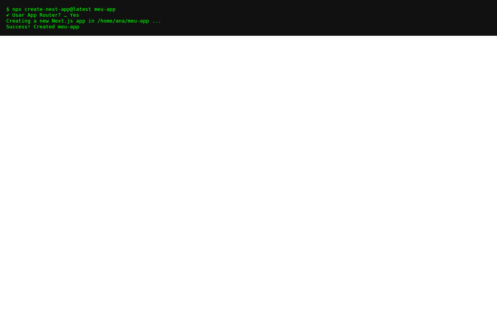

Criando o projeto
Com o Node instalado, chegou a hora de a Ana criar o primeiro projeto. O comando mágico é npx create-next-app@latest: ele baixa o assistente oficial, faz algumas perguntas e entrega uma pasta pronta com tudo configurado. Nesta página você vai rodar esse comando e entender cada pergunta que ele faz.
- Rodar
npx create-next-app@latest meu-app - O que significa cada pergunta interativa (TypeScript, ESLint, Tailwind, src/, App Router, Turbopack, alias)
- Quais flags usar para criar o projeto sem perguntas (
--yes/ flags nomeadas) - Como entrar na pasta e conferir que deu certo
A ideia: o create-next-app é a Concessionária que monta seu carro zero
Comprar um carro zero km não é só "pegar as chaves": a concessionária pergunta cor, câmbio, se quer teto solar, seguro, blindagem... e no fim você sai com um carro montado do jeito que você pediu, com manual e garantia. O create-next-app funciona exatamente assim: ele é o assistente oficial que "monta o carro" (o projeto) fazendo uma entrevista rápida. Cada pergunta escolhe uma peça do seu projeto: se vai ter TypeScript (tipagem estática), ESLint (o "revisor" que acha erro antes de rodar), Tailwind (um kit de CSS utilitário), a pasta src/, o App Router, o Turbopack e o alias de importação @/*.
O npx no começo é só um ajudante do npm: ele baixa o pacote create-next-app na hora (por isso o @latest, que garante a versão mais nova) e executa, sem instalar nada globalmente no seu computador. Ou seja: na primeira vez ele baixa rapidinho; depois usa o cache. Pense no npx como "empréstimo de ferramenta": você usa e devolve, não precisa comprar.
Para o guia inteiro, as respostas da Ana são: TypeScript: Yes (o guia usa .jsx nos exemplos para ficar mais leve, mas o projeto pode ser TS — a lógica é idêntica), ESLint: Yes, Tailwind: No (vamos aprender CSS puro primeiro no capítulo de estilos), src/: No, App Router: Yes (essencial!), Turbopack: Yes e alias @/*: padrão (Yes).
Ana compra o carro zero na concessionária em vez de montar peça por peça
Quando a Ana quis um carro, ela tinha duas opções: comprar cada peça (motor, banco, roda) e montar na garagem — semanas de trabalho e parafusos sobrando — ou ir numa concessionária e sair dirigindo no mesmo dia. O create-next-app é a concessionária do Next.js: um comando que entrega o carro pronto, com motor (React), rodas (roteador), pintura (CSS) e manual (README), bastando responder às perguntas do vendedor.
As perguntas do assistente são as opções do carro: TypeScript? ESLint? Tailwind? App Router? — e neste guia a resposta para App Router é sempre Yes, porque é o modelo novo que o guia inteiro ensina. Depois do cd meu-app, a Ana já está dentro da concessionária dela, com tudo no lugar.
Rodando o assistente (terminal da Ana)
ana@notebook:~$ npx create-next-app@latest meu-app ✔ Qual o nome do projeto? … meu-app ✔ Usar TypeScript? … Yes ✔ Usar ESLint? … Yes ✔ Usar Tailwind CSS? … No ✔ Usar o diretório src/? … No ✔ Usar App Router? … Yes ✔ Usar Turbopack para o dev? … Yes ✔ Personalizar o alias de import (@/*)? … No Creating a new Next.js app in /home/ana/meu-app. Installing dependencies: react, react-dom, next… Success! ✨ Happy coding!

create-next-app: cada ✔ é uma escolha que vira configuração do projeto.Sem perguntas: flags no próprio comando
Se a Ana já sabe as respostas (ou quer automatizar), dá para passar tudo na linha de comando e pular o modo interativo:
ana@notebook:~$ npx create-next-app@latest meu-app \ --typescript --eslint --no-tailwind --no-src-dir \ --app --turbopack --import-alias "@/*" --use-npm # ou simplesmente aceitar os padrões de uma vez: ana@notebook:~$ npx create-next-app@latest meu-app --yes
Entrando no projeto
ana@notebook:~$ cd meu-app ana@notebook:~/meu-app$ ls app node_modules package.json next.config.mjs public .gitignore ana@notebook:~/meu-app$ code . # abre no VS Code (opcional)
Missão: troque o nome do projeto de meu-app para app-da-ana nas três linhas do terminal (comando, pasta criada e mensagem final). Rode ▶ e ✔.
function App() {
const linhas = [
"$ npx create-next-app@latest meu-app",
"✔ Usar App Router? … Yes",
"Creating a new Next.js app in /home/ana/meu-app ...",
"Success! Created meu-app"
];
return (
<div style={{ background: "#111", color: "#0f0", fontFamily: "monospace", padding: 16 }}>
{linhas.map((l, i) => <div key={i}>{l}</div>)}
</div>
);
}
function App() {
const linhas = [
"$ npx create-next-app@latest app-da-ana",
"✔ Usar App Router? … Yes",
"Creating a new Next.js app in /home/ana/app-da-ana ...",
"Success! Created app-da-ana"
];
return (
<div style={{ background: "#111", color: "#0f0", fontFamily: "monospace", padding: 16 }}>
{linhas.map((l, i) => <div key={i}>{l}</div>)}
</div>
);
}
Quando dá errado
Erros reais que a Ana pode encontrar na criação:
error: could not create project "meu app!" — invalid name. Dica do guia: use só letras minúsculas, números, hífen e underline, sem espaços: meu-app, site-da-ana, portfolio2025.
Error: The directory meu-app is not empty. Dica do guia: escolha outro nome ou remova a pasta antiga (`rm -rf meu-app` — cuidado, apaga tudo dentro).
npm ERR! network request to https://registry.npmjs.org/... failed. Dica do guia: o create-next-app precisa baixar ~300MB de dependências. Conecte na internet e rode de novo — o npx usa cache, então a segunda tentativa continua de onde parou.
Exercícios
1. Qual comando cria um projeto Next.js novo chamado "meu-app" com a versão mais recente do assistente?
2. Na pergunta "✔ Usar App Router?", o que o guia manda responder?
Exercício 1
Depois que o create-next-app termina, qual comando entra na pasta do projeto recién-criado chamado meu-app?